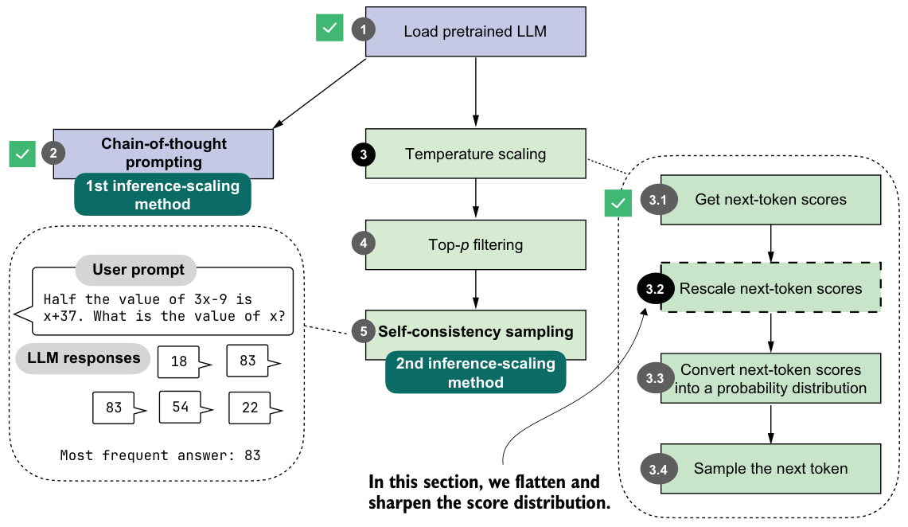
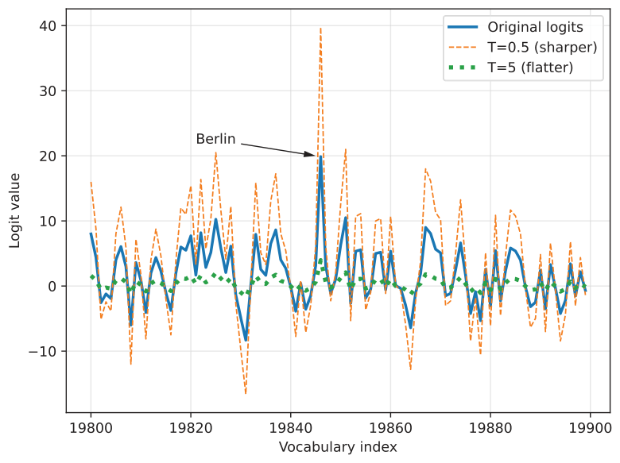

4.4.2Rescaling token scores (logits) via a temperature parameter
Now that you know how the model selects its next token, we can introduce the concept of temperature. Temperature, or, more precisely, the temperature parameter, rescales the logits, which makes the corresponding probability distribution sharper or flatter and thereby affects how the next token is selected.
As shown in figure 4.8, this section focuses on rescaling the next-token logits with a temperature parameter before using them for sampling. Rescaling here means adjusting the magnitude of the scores so the sampling step becomes more or less sensitive to differences in the scores.
The code for implementing the temperature rescaling step (step 3.2 in figure 4.8), is relatively short and simple. In essence, the following code rescales the logit values before converting them to probabilities (discussed in the next section).
def scale_logits_by_temperature(logits, temperature):
if temperature <= 0:
raise ValueError("Temperature must be positive")
return logits / temperatureIn practice, temperature values are expected to be positive numbers, so we raise an error if the temperature is zero or less. We will add more temperature-scaling safeguards later, when we add temperature scaling to our text generation function.
For all other values, the logits are divided by the temperature. A temperature of 1.0 means no change, because dividing a number by 1 leaves it unchanged. A temperature

lower than 1.0 makes the distribution sharper, which makes the model more confident when it selects the next token. Temperatures higher than 1.0 flatten the logit distribution, which can make sampling (step 3.4 in figure 4.8) more diverse. In other words, higher temperatures reduce the probability gap between the top token and lower-ranked tokens, increasing the chance that sampling will pick a non-maximum token.
Let’s see this scale_logits_by_temperature function in action. We’ll try it out with relatively extreme temperature values of 0.5 and 5.0 for a stronger effect.
def plot_logits_with_temperature(
next_token_logits, start=19_800, end=19_900,
temps=(0.5, 5.0),
):
x = torch.arange(start, end)
logits_orig = next_token_logits[0, start:end].float().cpu()
logits_scaled = [
scale_logits_by_temperature(logits_orig, T) for T in temps
]
plt.plot(x, logits_orig, label="Original logits", lw=2)
plt.plot(
x, logits_scaled[0],
label=f"T={temps[0]} (sharper)", ls="--", lw=1
)
plt.plot(
x, logits_scaled[1],
label=f"T={temps[1]} (flatter)", ls=":", lw=3
)
# Highlight max logit
max_idx = torch.argmax(logits_orig)
plt.annotate(
"Berlin",
xy=(x[max_idx], logits_orig[max_idx]),
xytext=(x[max_idx] - 25, logits_orig[max_idx] + 2),
arrowprops={"facecolor": "black", "arrowstyle": "->", "lw": 1.5},
fontsize=12,
)
plt.xlabel("Vocabulary index")
plt.ylabel("Logit value")
plt.legend()
plt.grid(alpha=0.3)
plt.tight_layout()
plt.show()
plot_logits_with_temperature(
next_token_logits,
temps=(0.5, 5.0)
)As shown in figure 4.9, the larger temperature (5.0) yields a much flatter score distribution, while the smaller temperature (0.5) yields a much sharper one.

The plotting code in listing 4.5 is very similar to the plotting code in listing 4.3. In addition to applying temperature scaling, we are now using a line plot (plt.plot) instead of a bar plot (plt.bar). Although a bar plot is technically a better choice for the discrete vocabulary indices on the x-axis, a line plot makes it easier to visualize and compare the rescaled logits in this case.
The important point is not the absolute height of a logit by itself, but how the differences between logits change. If a token such as "Berlin" stands out more strongly than the alternatives, it is more likely to be selected later. If the differences shrink, lower-ranked tokens become more likely to be selected. The next section will illustrate this by converting the logits into probabilities.